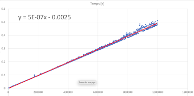

TP2-PROG-01 : Approche pratique de la complexité : Pile ou face
Contents

TP2-PROG-01 : Approche pratique de la complexité : Pile ou face#
Objectifs pédagogiques#
Comprendre et implémenter la boucle tant qu’une condition est vraie (boucle
while)Découvrir la bibliothèque de fonctions
randompour les nombres aléatoiresêtre capable de mesurer le temps d’un bloc d’instructions dans un code informatique
déduire la complexité temporelle d’un algorithme
La boucle While#
Une boucle while est une boucle Python qui se fait tant que une condition est vraie. On peut la considérer comme une généralisation du test conditionnel if qui se ferait tant que la condition est remplie
if condition :
instruction 1
instruction 2
devient :
while condition :
instruction 1
instruction 2
ce qui signifie qu’il est obligatoire d’avoir une possibilité de rendre la condition fausse dans la boucle while. Sinon, on se retrouve devant une boucle toujours vraie : c’est la boucle infinie
Exercice 1 : la boucle while#
La boucle tant que se déclare en python avec le mot clef while:
while condition :
instruction 1
instruction 2
etc..
Exemple : Tant que la variable N n’est pas égale à 10, exécuter N = N + 1
N = 0
while (N != 10):
N = N + 1
print(N)
10
Ecrivez un code python qui :
demande à l’utilisateur une valeur minimum
demande à l’utilisateur une valeur maximum
initialise une variable
carre = 0Calcule le carré des nombres entiers compris entre les valeurs minimum et maximum
(bien qu’il soit possible d’écrire ce programme avec une boucle for, l’écrire avec une boucle while
Les nombres aléatoires#
Un nombre aléatoire est un nombre quelconque tiré au hasard entre deux bornes.
Il est difficile pour un ordinateur de produire des nombres aléatoires. Il existe toutefois une bibliothèque de fonctions dans Python qui nous permet de le faire. Cette bibliothèque s’appelle random. Elle contient notamment une fonction qui permet de tirer un nombre aléatoire entier entre deux bornes :
import random
borneInf = 0
borneSup = 10
aleatoire = random.randint(borneInf, borneSup)
Ce programme tirera à chaque exécution un nombre aléatoire compris entre 0 et 10
Exercice 2 : Nombres aléatoires#
Voici un programme qui permet de tirer un nombre aléatoire et de l’afficher:
import random
borneInf = 2
borneSup = 10
aleatoire = random.randint(borneInf, borneSup)
print(aleatoire)
3
modifiez les bornes
borneInfetborneSupobservez que votre programme donne effectivement un nombre aléatoire compris entre ces bornes
Exercice 3 : Pile ou face ?#
Lorsqu’on lance une pièce de monnaie en l’air, elle a une chance sur deux de retomber sur face, une chance sur deux sur pile.
Vérifions que la bibliothèque random nous donne bien les bonnes valeurs.
Ecrivez un programme qui tire 10000, 100000, 10000000 un nombre aléatoire entier entre 0 (pile) et 1 (face) à l’aide d’une boucle
comptez le nombre de piles et de face (en stockant la valeur intermédiaire dans deux variables
nbrPileetnbrFaceVérifiez que le résultat est le bon
Mesure du temps dans un code#
Dans Python, il est possible de mesurer le nombre de secondes entre deux lignes d’un programme. Cela se fait en important la bibliothèque time et en appelant une fonction de timing (qui retourne le temps) : time.time().
import time
start = time.time()
# block de code à mesurer
end = time.time()
print("Temps passé dans le bloc de code à mesurer : ",(end-start))
Exercice 4 : Mesurer le temps#
Modifiez votre code de pile ou face pour qu’il mesure le temps entre le début et la fin du code. Ce temps permettra d’être utilisé pour la mesure de la complexité
Exercice 5 : Mesurer le nombre d’opérations#
Observez votre code et comptez le nombre d’opérations (instructions) par itération de la boucle. Modifiez ensuite votre code pour que le nombre d’opérations ou d’instructions soit comptabilisés.
Exercice 6 : Complexité de Pile ou Face#
Dans un tableau Excel, placez les valeurs de \(N\) (nombre de tirs), le nombre d’opérations (instructions) mesurées \(NbrOps\) et le temps (\(f(N)\)). Quelle est la classe de complexité de cet algorithme ?
La console de Thonny ne permet pas de copier-coller plus de 1000 lignes de sortie (print). Afin de pouvoir créer des graphiques dans Excel, il est nécessaire d’enregistrer les valeurs N, Nbrops et temps dans un fichier de type CSV. Voici un code permettant de créer un tel fichier, d’enregistrer des données par ligne (sous la forme d’une liste), et de refermer le fichier. Le fichier final nom_de_fichier.csv se trouvera dans le même dossier que le fichier source Python.
import csv
f = open("nom_de_fichier.csv", "w")
writer = csv.writer(f)
...
data = [n, altitude_max]
writer.writerow(data)
...
f.close()
Dans Excel, vous pouvez importer ensuite les données contenues dans le fichier CSV (Coma Separated Values) : Fichier -> Importer -> CSV puis préciser que le délimiteur est une virgule (un Coma en anglais).
L’insertion d’un fichier vous permet au final de créer un grpahique à partir des données importées et de déduire la complexité de l’algorithme.

ou en augmentant la taille d’entrée N (attention tout de même au temps d’exécution !!)
